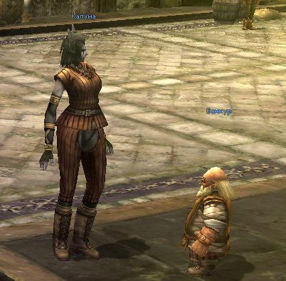

Caruna on Confederation Road (C-7)
Need:
- 37 Level
- Splintered claw - x5
- Sharp fang - x5
- Durable bone - x5
Additional inforamtion:
- Splintered claw - Bloody Bats Lv20, at night
- Sharp fang - Most snakes, e.g. Bibron's Boas Lv40, the Foothills of Mt. Jorito, H-7
- Durable bone - Skull Pulverizers Lv32, Nelstadt Plains (any time)(I-9) or Himurart Desert (night)(I-7).
- Completing this quest opens possibility of the sertain gear upgrading. You need catch the trigger in your nation.
(message from the Caruna) (Latugan Empire H-9). The Master is standing at Nelstadt Plains (G-10). Bring 10 Silver crystals.
Reward: